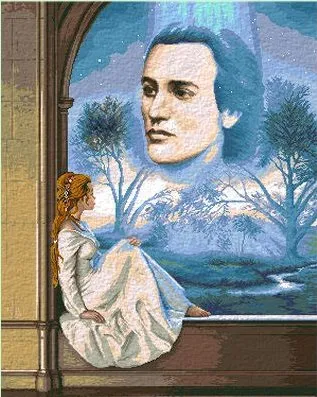
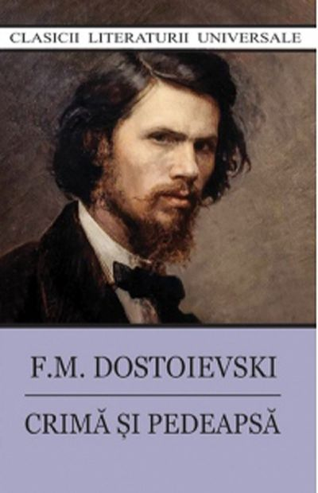
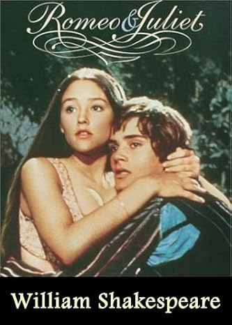
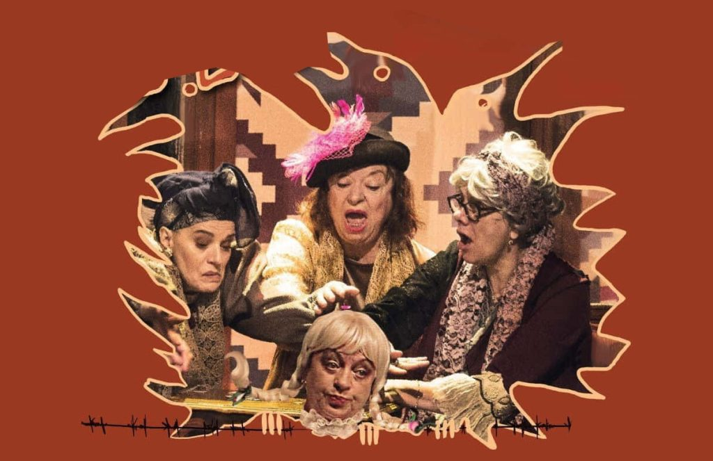

Literatura
Literatura este orice colecție de lucrări scrise, sau scrierile considerate în mod special a fi o formă de artă,
în special proză, ficțiune, dramă, poezie. Literatura este o metodă de înregistrare, conservare și transmitere a
cunoștințelor și a divertismentului și poate avea, de asemenea, un rol social, psihologic, spiritual sau politic.
Un gen literar este o categorie a literaturii. Genurile pot fi determinate de tehnica literară, ton, conținut sau lungime
(în special pentru ficțiune). Literatura este de obicei subdivizată în trei forme clasice ale Greciei Antice, poezie,
dramă și proză, sau, mai general, în cele trei genuri: liric, epic și dramatic.
Luceafarul
Luceafarul este una dintre cele mai cunoscute poezii ale lui Mihai Eminescu, inceputa inca din 1873, dar scrisa si
finisata de-a lungul multor ani pana la publicarea sa in revista Convorbiri literare si in final in volumul Poesii,
sub ingrijirea lui Titu Maiorescu, in anul 1884. Poemul este considerat de catre critici ca fiind cea mai reprezentativa
poezie pentru opera lirica eminesciana, deoarece aceasta contine intreaga plaja tematica a discursului liric eminescian,
precum si ideologia romantica ce a modulat gandirea inclusiv filosofica a lui Eminescu. Tema romantica a poemului este
problematica geniului in raport cu lumea, iubirea si cunoasterea.

Crima si pedeapsa
Crima si pedeapsa este un roman scris de autorul rus Feodor Dostoievski, fiind publicat pentru prima data in ziarul
intitulat Mesagerul rus, aparand in 12 numere lunare ca mai tarziu sa fie publicat ca roman, fiind considerat una
dintre cele mai cunoscute opere literare a tuturor timpurilor, cu influente asupra romancierilor ce i-au urmat.
Romanul rus ilustreaza tema obtinerii salvarii prin suferinta, o trasatura des intalnita in opera lui Dostoievski, in
religia crestina considerandu-se ca suferinta are efect purificator asupra spiritului uman, acordandu-i sansa mantuirii.

Romeo si Julieta
Romeo si Julieta este o tragedie scrisa de William Shakespeare despre soarta a doi indragostiti care lupta impotriva
prejudecatilor sociale, a urii intre familii, a ambitiei vanitoase si a destinului. Tragedia scrisa in 1594, in
cinci acte, are la baza o poveste reala din secolul al XIV-lea a doi adolescenti fatal indragostiti unul de altul
si este probabil cea mai cunoscuta piesa a Bardului, unul dintre succesele sale timpurii, fiind considerata cea mai
tipica poveste de dragoste a Renasterii.

Artele plastice
Artele plastice sunt practicile sau activitățile care realizează o reprezentare artistică prin forme sau volume. Termenul
este considerat de unii ca fiind o formă mai restrânsa și învechită pentru arte vizuale, desemnând la origine, în tradiția
iluministă, artele așa-zis majore precum pictura, sculptura, desenul și gravura.
Artele vizuale sunt forme de artă precum pictura, desenul, imprimarea, sculptura, ceramica, fotografia, filmul, benzile
desenate, designul, meșteșugurile și arhitectura. Multe discipline artistice, cum ar fi artele spectacolului sau artele
textile, implică, de asemenea, aspecte ale artelor vizuale, precum și artele de alte tipuri. De asemenea, în artele vizuale
sunt incluse artele aplicate, cum ar fi designul industrial, designul grafic, designul vestimentar, designul interior și
arta decorativă.
Noaptea instelata
Noaptea instelata este o pictura in ulei pe panza a pictorului postimpresionist olandez Vincent van Gogh, pictata in
iunie 1889. Infatiseaza vederea de la fereastra orientata spre est a camerei sale de azil din Saint-Remy-de-Provence,
tocmai inainte de rasaritul soarelui, cu adaugarea unui sat imaginar. Considerata pe scara larga ca cea mai renumita
opera a lui Van Gogh, Noaptea instelata este una dintre cele mai recunoscute picturi din arta occidentala.

Tipatul
Tipatul este titlul a patru tablouri ale pictorului norvegian Edvard Munch, realizate intre 1893 si 1910. Tabloul este
considerat o expresie a anxietatii omului modern. Pictorul sustinea: Ma plimbam cu doi prieteni la apus de soare.
Cerul a devenit rosu ca sangele. M-am oprit si m-am sprijinit de un gard, simtindu-ma, in mod inexplicabil, extrem
de obosit. Limbi de foc si sange se intindeau pe fiordul albastru. Prietenii mei au continuat sa se plimbe, in timp
ce eu am ramas in urma, tremurand de spaima. Atunci am auzit tipatul enorm, infinit al naturii.

Mona Lisa (Gioconda)
Gioconda sau Mona Lisa este o pictura celebra a lui Leonardo da Vinci, realizata in anii 1503-1506, reprezentand o
femeie cu expresie ganditoare si un suras abia schitat. Este considerata cea mai renumita opera din istoria picturii.
In prezent tabloul este expus la Muzeul Luvru din Paris, fiind atractia principala pentru vizitatori. Leonardo da Vinci
a folosit modelul unei piramide pentru a reda aspectul calm al femeii. Mainile ei incrucisate formeaza unul dintre
colturile piramidei. Leonardo da Vinci, cel care a realizat celebrul desen Omul vitruvian, s-a folosit de geometrie
pentru a crea impresia de distanta intre Mona Lisa si privitor.

Catedrala Notre-Dame
Catedrala Notre-Dame din Paris este un monument al arhitecturii gotice timpurii din Franta, sediu al Arhiepiscopiei
Parisului. Catedrala se afla pe Ile de la Cite, in centrul Parisului. Constructia a inceput in anul 1163, pe locul
unui lacas de cult dedicat sfantului diacon Stefan. In arhitectura catedralei se manifesta dualitatea influentelor
stilistice: pe de o parte, exista trasaturi ale stilului romanic din Normandia, cu unitatea lui puternica si compacta,
iar pe de alta parte, au fost utilizate realizarile inovatoare arhitecturale ale stilului gotic, care confera o
impresie de simplitate a constructiei verticale.

Poarta sarutului
Poarta sarutului este o sculptura in piatra, realizata de Constantin Brancusi, parte a tripticului Ansamblului
Monumental din Targu Jiu, avand latimea de 6.45 de metri, inaltimea de 5.13 metri si grosimea de 1.69 metri.
Pe fetele fiecarei coloane se regaseste simbolul sarutului, doua jumatati ale unui cerc, atat de caracteristic operei
lui Brancusi. Poarta sarutului poate fi considerata un adevarat arc de triumf, ea simbolizand, dupa cum multi afirma,
triumful frumusetii vietii asupra tenebrelor mortii.

Arta spectacolului
Artele spectacolului (performing arts) denumesc generic acele arte ale căror opere sunt caracterizate de o reprezentare
efemeră, limitată în timp. Ele presupun prezența unor interpreți sau actori și a unui public spectator.
Acestea se deosebesc de artele plastice prin faptul că se bazează pe o acțiune de interpretare în timp (arta se produce în
momentul prezentării ei) și nu pe expunerea unor opere de artă realizate în prealabil. Esența artelor spectacolului constă
deci în orientarea lor către artă ca proces, în locul lucrării de artă ca obiect palpabil. Chiar dacă spectacolul, ca proces
efemer, poate fi înregistrat, producerea lui inițială rămâne una de tip procesual și nu obiectual.
Artele spectacolului includ dans, muzică, teatru, operă, mimă și alte forme de artă în care interpretarea este produsul
principal. Operele sunt clasificate în general ca fiind fie repetabile (de exemplu, după scenariu sau partitură), fie
improvizate pentru fiecare spectacol.
Sonata lunii
Sonata pentru pian nr. 14, op. 27 nr.2 in do diez minor de Ludwig van Beethoven, este sonata cunoscuta cu numele de
Sonata lunii. Beethoven a compus aceasta sonata in 1801 si a dedicat-o elevei lui, Contesei Giulietta Guicciardi,
de care era indragostit. In 1832, poetul german Ludwig Rellstab a intreprins o calatorie nocturna pe lacul
Vierwaldstattersee din Elvetia, unde a comparat melodia acestei sonate cu lumina lunii reflectata pe lac. De atunci,
piesa este cunoscuta ca Sonata lunii.
Bohemian Rhapsody
Bohemian Rhapsody este o melodie scrisa de Freddie Mercury si inregistrata in original de formatia Queen in cadrul
albumului A Night at the Opera, aparut in 1975. Melodia a parut si separat ca single. Bohemian Rhapsody o melodie de
o mare complexitate, avand o clara structura a unei mini-opere. Melodia recurge la mai multe ritmuri si multe stiluri
muzicale in decursul desfasurarii sale de circa sase minute. Printre acestea se pot mentiona partea a capella, balada,
solo-ul de chitara, elemente de opera, partea de hard rock, pentru ca in final melodia sa se incheie violent in stil
heavy metal cu reluarea extrem de scurta a tuturor motivelor muzicale anterioare.
Lacul lebedelor
Lacul lebedelor este un balet clasic cu un prolog si patru acte de Piotr Ilici Ceaikovski, compus intre anii 1875 si
1876. Lacul lebedelor spune povestea de dragoste dintre printul Siegfried si tanara Odette. Tanara a fost blestemata
de un vrajitor, condamnata sa traiasca in corpul unei lebede albe. Ea poate reveni la forma sa umana doar noaptea.
Vraja nu poate fi desfacuta decat de un juramant sincer de iubire. Siegfried ii promite dragoste eterna lui Odette,
dar este pacalit de vrajitor, care i-o prezinta pe Odile. Odile seamana perfect cu iubita lui si, crezand ca este chiar
ea, ii face aceeasi promisiune. Cand totul pare pierdut, printul se trezeste si realizeaza ca a fost doar un vis.

Gaitele
Comedia Gaitele, de Alexandru Kiritescu, infatiseaza, de-a lungul celor trei acte, avatarurile clanului Duduleanu,
intruchipat de cele trei gaite, Aneta, Zoia si Lena, precum si de generatia urmatoare. Avare, cele trei babe dau
impresia ca ar putea trai cat lumea. Moartea Margaretei, fiica si nepoata sinucisa nu le zdruncina apetitul, nici
placerea de a barfi la nesfarsit, jucand carti si band tacticos cafele. Centrul de interes al piesei sta insa in
creionarea chipului crud al lumii provinciale. Toate personajele sunt si se eticheteaza reciproc nebuni, izaltati si
monstri intr-o atmosfera de ferocitate generala, in care fiecare vrea viata, trupul, rasuflarea, tot sangele inimii
celuilalt. Comedia Gaitele devine, astfel, una dintre cele mai moderne experiente teatrale romanesti.
